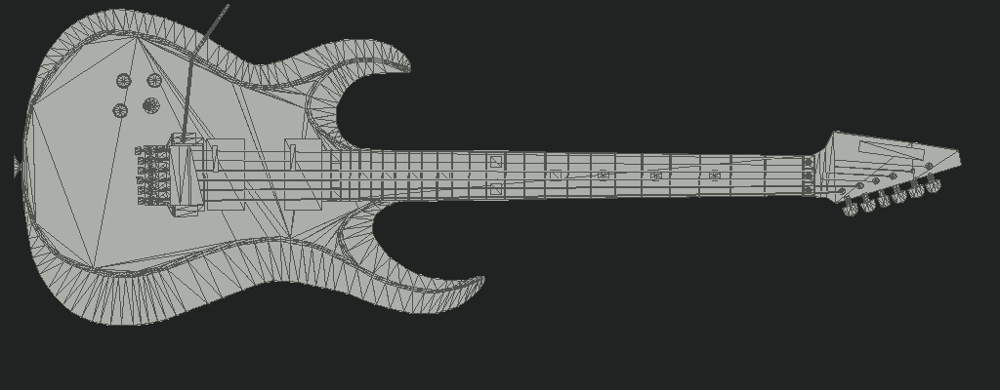

Electric Lab
Experimental recovered-model preview. Explore the original electric guitar’s geometry, then try a chord.
Original geometry. Custom Lab colours. Try painted finishes with wood and metal details, or choose Recovered neutral for the saved source tint. Original runtime finish not yet verified.

Static geometry reference. The part notes remain available below.
Loading the recovered guitar…
Drag to orbit; pinch or scroll to zoom. With the model focused, use arrow keys, + / −, or Home to reset. Click the guitar to inspect an area; click a teaching string to play it.
Gold strings and fret markers are a teaching overlay. Vibration is slowed for visibility, not a physical sound simulation.
Whole guitar · three-quarter view.
Explore the model
Recovered geometry
Choose an area to bring it closer and learn what it does. The original mesh stays intact; these are inspection guides, not independently removable parts.
Try the strings
Low → high. Keys 6 → 1 also play the strings. A muted string is marked ×. Standard tuning stays fixed in this standalone Lab.
Sound starts only when you play. Recordings load on the first note.
Uses the studio’s existing recorded electric-guitar bank. These recordings are not recovered APK audio and do not predict this model’s tone. No microphone is used.
What was recovered, and what this preview leaves out
- Original mesh
- Clean_Mesh
- Geometry
- 9,325 vertices · 6,452 triangles
- Original material slots
- StratDiffuseMap · PolyLogo
- Retained
- Positions, normals, primary UVs, triangle order after handedness conversion, and embedded logo
The GLB is an unchanged copy of the recovered conversion. Custom finishes assign materials to the existing triangles without changing vertices, UVs, triangle order or the embedded logo. Wood, paint and metal styling is a Lab interpretation, not recovered original materials. No replacement guitar or repainted acoustic atlas is used.
The source shader’s empty base-texture slot has a valid white default; it is not evidence of a missing atlas. The original Cube_Sunol cubemap exists in the source, but its complete reflection and Unity’s particle shader are not reproduced here. Studio lighting, custom finishes and the GLB’s material approximation cannot verify the original runtime finish.
Seven additional UV layouts, original runtime material bindings, and animated APK hands are not included in this preview. The main Chord Player and Guitar Lab are unchanged.
Read model provenance and limitations